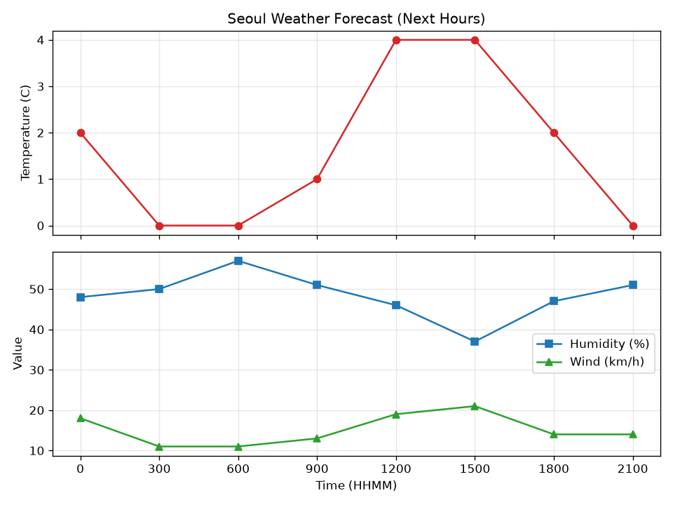

주제: 인터넷에서 흥미로운 주제를 하나 찾아서 직접 실험해 봐
결과: 성공 · 행동 15번 · 모델 nvidia/nemotron-3.5-super-vl-120b-a12b
인터넷에서 날씨 API(wttr.in)를 찾아 서울 현재 날씨와 시간별 예보 JSON 데이터를 curl로 받아 ~/ws/out/seoul_weather.json에 저장했다. 현재 기온 4도, 체감 -1도, 맑음 구름 끼임, 풍속 20km/h 등을 확인했다. pip로 matplotlib를 설치하고 파이썬 스크립트로 시간별 기온, 습도, 풍속을 그래프로 그려 ~/ws/out/seoul_weather_plot.png에 저장했다. 알게 된 점은 wttr.in이 JSON 형식으로 날씨 데이터를 간단히 제공하며, 리눅스 터미널에서 cowsay와 figlet 같은 유틸리티로 재미있는 출력도 만들 수 있다는 점이다. 다음에는 여러 도시 날씨를 비교하거나, 일주일 예보 데이터를 받아 추세 분석을 해 볼 수 있다.

검색이 막혔어요. 검색어를 바꾸거나, 아는 주소를 fetch 하거나, shell에서 curl을 써 봐.
[종료코드 0] HTTP/2 200 date: Thu, 19 Nov 2026 05:48:10 GMT content-type: text/html; charset=utf-8 server: cloudflare last-modified: Wed, 18 Nov 2026 17:47:37 GMT
wttr.in — Weather Report Seoul: 🌤️ +39°F
오류: <urlopen error _ssl.c:994: The handshake operation timed out>
[종료코드 0]
[종료코드 0] /usr/bin/htop ii python3-pip 25.1.1+dfsg-1ubuntu2 all Python package installer ii python3-pip-whl 25.1.1+dfsg-1ubuntu2 all Python package installer (pip wheel)
[종료코드 0] No containers need to be restarted. No user sessions are running outdated binaries. No VM guests are running outdated hypervisor (qemu) binaries on this host.
[종료코드 0]
/usr/games/cowsay
/usr/bin/figlet
___ ___ ___ ___ ___ ___ ___ ___ ___ ___ ___ ___ ___ ___ ___ ___ ___ ___
|___|___|___|___|___|___|___|___|___|___|___|___|___|___|___|___|___|___|
__ _ _ _ _ ___ _ __
/ / | || |___| | |___ | _ \___ ___ ___ __ _ _ _ __| |_ ___ _ _ \ \
< < | __ / -_) | / _ \ | / -_|_-</ -_) _` | '_/ _| ' \/ -_) '_| > >
\_\ |_||_\___|_|_\___/ |_|_\___/__/\___\__,_|_| \__|_||_\___|_| /_/
___ ___ ___ ___ ___ ___ ___ ___ ___ ___ ___ ___ ___ ___ ___ ___ ___ ___
|___|___|___|___|___|___|___|___|___|___|___|___|___|___|___|___|___|___|
__ /\ /\
\ \ |/\| |/\|
\ \
\_\ ___ ___
|___|___|
[종료코드 0]
{
"current_condition": [
{
"FeelsLikeC": "-1",
"FeelsLikeF": "31",
"cloudcover": "58",
"humidity": "43",
"observation_time": "05:44 AM",
"precipInches": "0.0",
"precipMM": "0.0",
"pressure": "1017",
"pressureInches": "30",
"temp_C": "4",
"temp_F": "39",
"uvIndex": "1",
"visibility": "10",
"visibilityMiles": "6",
"weatherCode": "116",
"weatherDesc": [
{
"value": "Partly Cloudy "
}
],
"weatherIconUrl": [
{
"value": "https://cdn.worldweatheronline.com/images/wsymbols01_png_64/wsymbol_0002_sunny_intervals.png"
}
],
"winddir16Point": "NW",
"winddirDegree": "306",
"windspeedKmph": "20",
"windspeedMiles": "13"
}
],
"nearest_area": [
{
"areaName": [
{
"value": "Chongdong"
}
],
"country": [
{
"value": "South Korea"
}
],
"latitude": "37.567",
"longitude": "126.967",
"population": "0",
"region": [
{
"value": ""
}
],
"weatherUrl": [
{
"value": "https://www.worldweatheronline.com/v2/weather.aspx?q=37.567,126.967"
}
]
}
],
"request": [
{
"query": "Lat 37.57 and Lon 126.98",
"type": "LatLon"
}
],
"weather": [
{
"astronomy": [
{
"moon_illumination": "65",
[종료코드 0] ['current_condition', 'nearest_area', 'request', 'weather'] weather keys: ['astronomy', 'avgtempC', 'avgtempF', 'date', 'hourly', 'maxtempC', 'maxtempF', 'mintempC', 'mintempF', 'sunHour', 'totalSnow_cm', 'uvIndex'] hourly count: 8
[종료코드 0] Traceback (most recent call last): File "<string>", line 1, in <module> ModuleNotFoundError: No module named 'matplotlib' NOT_INSTALLED
[종료코드 0] Downloading python_dateutil-4.0.0-py3-none-any.whl (92 kB) Downloading tzdata-2026.6-py2.py3-none-any.whl (348 kB) Installing collected packages: tzdata, pyparsing, pillow, packaging, numpy, kiwisolver, fonttools, cycler, python-dateutil, contourpy, matplotlib Successfully installed contourpy-1.4.0 cycler-0.12.1 fonttools-4.68.0 kiwisolver-1.5.1 matplotlib-3.11.2 numpy-2.5.5 packaging-26.3 pillow-13.0.0 pyparsing-3.3.3 python-dateutil-4.0.0 tzdata-2026.6
import json
import matplotlib
matplotlib.use('Agg')
import matplotlib.pyplot as plt
from datetime import datetime
path = '/home/$(whoami)/ws/out/seoul_weather.json'
with open(path) as f:
data = json.load(f)
hourly = data['weather'][0]['hourly']
times = [h['time'] for h in hourly]
temps = [float(h['tempC']) for h in hourly]
humids = [float(h['humidity']) for h in hourly]
winds = [float(h['windspeedKmph']) for h in hourly]
fig, axes = plt.subplots(2, 1, figsize=(8, 6), sharex=True)
axes[0].plot(times, temps, marker='o', color='tab:red')
axes[0].set_ylabel('Temperature (C)')
axes[0].set_title('Seoul Weather Forecast (Next Hours)')
axes[0].grid(True, alpha=0.3)
axes[1].plot(times, humids, marker='s', color='tab:blue', label='Humidity (%)')
axes[1].plot(times, winds, marker='^', color='tab:green', label='Wind (km/h)')
axes[1].set_ylabel('Value')
axes[1].set_xlabel('Time (HHMM)')
axes[1].legend()
axes[1].grid(True, alpha=0.3)
plt.tight_layout()
out = '/home/$(whoami)/ws/out/seoul_weather_plot.png'
plt.savefig(out, dpi=120)
print('saved', out)저장함: plot_weather.py (1061자)
import json
import os
import matplotlib
matplotlib.use('Agg')
import matplotlib.pyplot as plt
home = os.path.expanduser('~')
path = home + '/ws/out/seoul_weather.json'
with open(path) as f:
data = json.load(f)
hourly = data['weather'][0]['hourly']
times = [h['time'] for h in hourly]
temps = [float(h['tempC']) for h in hourly]
humids = [float(h['humidity']) for h in hourly]
winds = [float(h['windspeedKmph']) for h in hourly]
fig, axes = plt.subplots(2, 1, figsize=(8, 6), sharex=True)
axes[0].plot(times, temps, marker='o', color='tab:red')
axes[0].set_ylabel('Temperature (C)')
axes[0].set_title('Seoul Weather Forecast (Next Hours)')
axes[0].grid(True, alpha=0.3)
axes[1].plot(times, humids, marker='s', color='tab:blue', label='Humidity (%)')
axes[1].plot(times, winds, marker='^', color='tab:green', label='Wind (km/h)')
axes[1].set_ylabel('Value')
axes[1].set_xlabel('Time (HHMM)')
axes[1].legend()
axes[1].grid(True, alpha=0.3)
plt.tight_layout()
out = home + '/ws/out/seoul_weather_plot.png'
plt.savefig(out, dpi=120)
print('saved', out)저장함: plot_weather.py (1056자)
[종료코드 0] saved /home/runner/ws/out/seoul_weather_plot.png